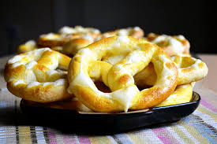
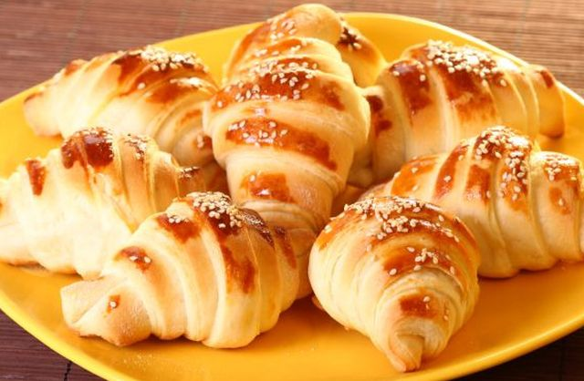

|
|
|

|
Slana pereca
U toplo mleko staviti 2 kasike ostrog brasna,
malo secera i paketic kvasca i sacekati
10 minuta da kvasac nadodje.
2.
Pomesati brasna sa uljem i solju i
dodati kvasac te umesiti testo koje
se ne lepi za ruke, ali ne sme biti tvrdo.
Dobro ga mesiti na pobrasnjenoj dasci bar
5 minuta uz dodavanje brasna ako je potrebno.
Prekriti testo i ostaviti na toplom 30 minuta da
udvostruci kolicinu.
3.
Pripremiti slani preliv. Pomesati so i brasno i
polako dodavati hladnu vodu i mesati da
nema grudvica.
Gustina je kao testo za palacinke.
4.
Od uskislog testa kidati ili nozem odsecati
male kuglice i prstima tanjiti u dug stapic.
Smotati perecu i slagati na podmazan pleh.
Samo malo podmazati uljem.
5.
Ostaviti da kisnu oko 10 minuta dok se rerna
zagreje na 250 stepeni.
6.
Pre stavljanja u rernu perece premazati
umucenim jajetom.
Peci perece do blago zute boje,
izvaditi i staviti po njima slani preliv i
vratiti jos 2-3 minuta da se lepo zarumene,
a preliv osusi.
|

|
Integralni hleb
1. Kvasac razmututi sa malo vode.
2. U vanglu za mešenje sipati brašno, dodati so, promešati. Dodati razmućen kvasac i mlaku vodu, pa mesiti varjačom dok se ne dobije glatko testo. Sud pokriti plastičnom folijom i ostaviti oko 1h da testo naraste.
3. Premesiti, oblikovati veknu (možete napraviti tri male vekne od ove količine), poređati u pleh. Veknice ovlaš posuti brašnom, pa zaseći nožem par puta. Ostaviti još 20 minuta.
4. Za to vreme ugrejati rernu, pa ispeći hleb (kod mene se obično peče 10 minuta na maksimumu pa još 20 na 180).
|
|

|
Kroasan sa sirom
Razmutiti kvasac sa vodom,mlekom i mineralnom vodom.Dodati šećer i nekoliko kašika brašna.Varjačom promešati i ostaviti 5 minuta da krene kvasac.U odgovarajuću posudu staviti jaje,jogurt,so,belance,isipati nadošli kvasac i sa brašnom zamesiti glatko testo.Testo pokriti krpom i ostaviti na toplom da nadođe,Nadošlo testo podeliti na 2 dela a svaki deo još na 5 loptica.Svaku lopticu razviti oklagijom veličine tanjira i premazati je omekšalim margarinom.Slagati jednu na drugu koru svih 5 ali zadnju nemojte premazivati.Postupak ponoviti i da drugim delom testa. Točkićem za testo preseći testo najmanje 16 puta.Ako želite manje kroasane preseći još dodatno nekoliko puta.Na svakom širem delu stavite parče sira i smotajte kroasan.Jednom rukom motajte a drugom razvlačite testo da bi se više puta uvio kroasan.Poređajte u plehu sa blagim razmakom.Postupak ponoviti i sa ostalim testom.
|
|